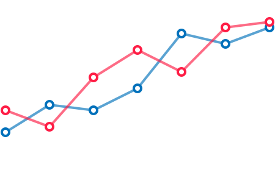

请在chrome浏览器 ( 以及mac ) 下获得最佳体验 --
Simple
CSS
Canvas
SVG
image.svg
→
<image>
background-image
background-image
xml
→
inline SVG
<svg version="1.1" xmlns="http://www.w3.org/2000/svg" class="bird" width="100" viewBox="0 0 64.3 72.2">
<path class="wing" d="M41.6,37.6c-0.5-0.1-1.1,0.2-1.2,0.8c-0.1,0.5,0.2,1.1,0.8,1.2c1.3,0.3,2.5,2.2,2.9,4.3
c0.2,0.9-0.3,2.3-1.1,3.4c-0.9,1.1-2,1.9-2.9,2c-1.3,0.1-2.3-2.5-2.6-4c0-0.1,0-0.2-0.1-0.3c-0.1-0.5-0.7-0.9-1.2-0.8
c-0.5,0.1-0.9,0.6-0.8,1.2c0,0.1,0,0.1,0.1,0.3c0.2,1.4-0.2,3-1.2,4.3c-1,1.4-2.5,2.3-3.9,2.4c-0.6,0.1-1-0.1-1.4-0.4
c-0.9-0.9-1-2.9-0.9-3.7c0-0.5-0.3-0.9-0.8-1c-0.5-0.1-1,0.2-1.1,0.6c0,0-1.5,4.1-4.4,4.9c-1,0.3-1.4-0.1-1.6-0.2
c-1-0.8-1.1-3.3-1.1-4.1c0-1.4,1.8-2.6,2.6-3c0.5-0.3,0.7-0.9,0.4-1.3c-0.3-0.5-0.9-0.7-1.3-0.4c-0.4,0.2-3.7,2-3.7,4.9
c0.1,2,0.3,4.4,1.9,5.6c0.6,0.4,1.3,0.7,2.1,0.7c0.4,0,0.8-0.1,1.2-0.2c1.9-0.5,3.3-1.9,4.3-3.2c0.2,0.7,0.6,1.4,1.1,1.9
c0.8,0.7,1.8,1.1,2.9,1c2-0.2,4-1.4,5.4-3.2c0.4-0.6,0.8-1.2,1-1.8c0.8,1.1,1.8,2,3.3,1.9c1.5-0.2,3.1-1.2,4.3-2.8
c1.2-1.6,1.8-3.4,1.5-4.9C45.5,40.5,43.7,38,41.6,37.6z" />
<path class="eye" d="M40,27.5L40,27.5c0.2,0,0.5,0,0.7-0.1c1-0.2,2-0.9,2.5-1.9c0.4-0.8,0.5-1.7,0.3-2.4
c-0.6-1.4-3.1-1.9-4.3-1.9c-0.4,0-0.7,0-1,0.1c-0.2,0-0.3,0.1-0.4,0.2c-0.6,0.6-1.4,1.9-0.7,3.5C37.6,26.2,38.2,27.5,40,27.5z
M39,23.2c0,0,0.1,0,0.2,0c1,0,2.2,0.4,2.4,0.6c0,0.1,0,0.4-0.2,0.7c-0.1,0.2-0.5,0.7-1.1,0.8c-0.1,0-0.2,0-0.3,0h0
c-0.4,0-0.6-0.2-1.1-1.4C38.7,23.8,38.9,23.5,39,23.2z" />
<path d="M64.3,29.5c-0.3-1-1.6-1.3-2-1.3l-4.5-0.8c4.8-2.6,4.8-3.7,4.8-4.1c0-0.5-0.3-1-0.8-1.2
c-1.7-0.8-7.5-1.7-8.5-1.8c-1.8-3.5-5-6.4-9.4-8.9c0,0,0,0-0.1-0.1c-0.4-0.3-7.2-5.6-11.7-9.1C32.1,2.2,32,2.1,32,2.1
c-0.6-0.2-2.4-1-3.6-0.2c-0.5,0.3-0.8,0.9-0.8,1.5c-3.6-2.7-5.9-3.8-6.9-3.2c-0.3,0.1-0.9,0.5-0.8,1.6c0.2,2.6,2.6,5.9,4.4,7.7
c-0.2,0.1-0.4,0.1-0.6,0.2c-3.2,1.3-2.6,13.1-2.3,18.1l0.1,7.6c0,1.6-1.1,2.9-2.7,3.2c-1.5,0.2-3,0.3-4.6,0.3
c-0.8,0-1.7-0.1-2.7-0.1c0.6-3.8-0.6-8.2-2.4-9.1c-0.8-0.4-1.6-0.2-2.2,0.5c-0.6,0.7-0.9,1.8-1,3.3c-0.5-1.2-0.9-2.1-0.9-2.2
c-0.5-1.2-1.6-3.1-3-2.8c-1.3,0.2-1.7,1.9-1.8,3.4c-0.5,4.7,1.4,7.3,2.3,8.3c0,0,0,0,0,0c-0.1,0.4-3.3,9,1.7,14.9
c2.9,3.4,6.6,6.9,12.1,9v7.2c0,0.6,0.4,1,1,1s1-0.4,1-1v-6.5c2.5,0.7,5.3,1.1,8.6,1.2v4.1c0,0.6,0.4,1,1,1s1-0.4,1-1v-4.1
c12.5-0.4,20.3-6.7,23.4-12.7c2.2-4.1,3.4-10.9,3.6-17.8c2.4-0.6,4.9-1.9,7.5-3.8C64.1,30.9,64.5,30.2,64.3,29.5z M60.1,23.6
c-0.9,0.8-2.9,1.9-4.9,2.9c-0.1-0.6-0.2-1.1-0.3-1.6c-0.2-0.8-0.4-1.7-0.7-2.4C56.3,22.8,58.7,23.2,60.1,23.6z M31.1,3.9
c2.9,2.3,5.1,4,6.7,5.3C36.7,9,35.4,9,34.2,8.9c0,0,0,0,0,0c-2.3-2.1-4.4-4.5-4.6-5.3C29.9,3.5,30.5,3.7,31.1,3.9z M26.7,9
c-0.7-0.5-4.2-4.1-4.8-6.9c1.6,0.7,5.5,3.6,9.2,6.7C29.7,8.9,28.2,8.9,26.7,9C26.7,9,26.7,9,26.7,9z M8.3,31.5
c0.7,0.7,1.8,3.8,1.1,7.2c-0.6,0-1.1,0-1.7,0.1c0-0.2,0-0.4,0-0.6C7.6,34.5,7.8,32.3,8.3,31.5z M2.1,32.1c0.1-0.6,0.2-1,0.2-1.3
c0.3,0.3,0.6,0.9,0.8,1.3c0.6,1.4,2.2,5.2,2.6,6.9c-0.5,0.1-1,0.1-1.4,0.2c-0.1-0.1-0.1-0.2-0.2-0.2C4.1,39,1.6,37,2.1,32.1z
M50.4,52.3c-2.9,5.5-10.3,11.5-22.3,11.6l-0.6,0c-11.7,0-17.5-4.9-22-10.1c-3.7-4.3-2-10.7-1.5-12.4c1.3-0.4,3.7-0.6,6.9-0.6
c1.1,0,2.2,0,3.1,0.1c1.6,0.1,3.3,0,4.9-0.3c2.5-0.4,4.4-2.6,4.4-5.1l-0.1-7.7c-0.6-8-0.1-15.6,1-16.2c0.9-0.4,3.5-0.6,6.9-0.6
c4.2,0,7.7,0.3,8.2,0.6c0.1,0.1,0.4,0.2,0.8,0.4c2.8,1.2,11.2,5,12.7,13.5C54.9,35.6,53.2,47.1,50.4,52.3z M55.8,33.3
c0-1.4-0.1-2.9-0.2-4.3l6.2,1.1C59.7,31.7,57.7,32.7,55.8,33.3z" />
</svg> <svg class="svg__vector-intro" viewBox="0 0 960 200">
<rect x="40.2" y="25.3" width="150" height="150"/>
<circle cx="354.4" cy="100.3" r="75"/>
<polygon points="593.6,25.3 617.9,74.7 672.4,82.6 633,121.1 642.3,175.3
593.6,149.7 544.8,175.3 554.1,121.1 514.7,82.6 569.2,74.7 "/>
<path d="M923,107.3C11.5,41.5 51.2,38.8 66.5,29.5C829,120
836.9,77.9 810,63.3C21.5 11.6 59 5 67.5,33.5"/>
</svg>
SVG Special Attribute
- fill
- fill-opacity
- stroke
- stroke-opacity
- stroke-dasharray
- stroke-dashoffset
- stroke-linecap
- stroke-width
- marker
- marker-start
- alignment-baseline
- text-anchor
- flood-color
- flood-opacity
- stop-color
- stop-opacity
- ...
LINE DRAWING描线
stroke-dasharray:00
stroke-dashoffset: 0
path
<svg width="800" viewBox="0 0 581 98">
<path id="path"
d="M62.9 14.9....2 11 33 17.3 36 21.1-37.6 42.8 6.2 72.9z"
stroke="#0171bb" stroke-width="2" />
</svg>
var path = document.getElementByID("path");
path.getTotalLength();
rect, circle, polygon...
转换
计算
MORPHING变形
<path d="
M 0 0 C 50 0 50 0 100 0 C 100 50 100 50 100 100 C 50 100 50 100 0 100
C 0 50 0 50 0 0
" />

Snap.svg.js
<svg id="js-svg" width="100" height="100">
<path id="path1" d="M 0 0 C 50 0 50 0 100 0 ...C 0 50 0 50 0 0" />
</svg>
//javascript
var paper = new Snap("#js-svg");
var path = paper.select("#path1");
path.animate({
d: "M 25,50 C 37.5,25 37.5,25 ... 12.5,75 12.5,75 25,50 Z"
},1000);
FOLLOW THE PATH路径运动
<defs>
<path id="p1"
d="M62.9 14.9c-25-7.74-56.6 4.8-60.4 24.3-3.73 19.6 21.6...">
</path>
</defs>
<text>
<textPath xlink:href="#p1" textLength="400" startOffset="250">
svg textPath元素可以让文字随着指定路径排列
</textPath>
</text>SMIL
Snap.svg.js
Snap.animate(0, followPath.length, function (val) {
//获取路径上相应长度点的信息
var movePoint = objectPath.path1.getPointAtLength(val);
//设定元素位置为相应点的坐标
objectPath.cicle.attr({
cx: movePoint.x,
cy: movePoint.y
});
}, mina.easeinout, 4500);
Element.getPointAtLength(length);
{
x: x coordinate, //x坐标
y: y coordinate, //y坐标
alpha: angle of derivative //切线角度
}
PATTERN图案填充
<!--define patterns 定义图案-->
<defs>
<pattern id="ashano-EU" width="64" height="64">
<path d="M50 50c0-5.523 4.477-10 10-10s17 10-10 10..." />
</pattern>
</defs>
<rect width="100%" height="100%" fill="url(#ashano-EU)" />
FILTER滤镜
<svg xmlns="http://www.w3.org/2000/svg" version="1.1">
<defs>
<filter id="filter-name">
...
<!-- insert filters here -->
...
</filter>
...
</defs>
</svg>.selector{
filter: url('#filter-name');
filter: url('filters.svg#filter-name');
}SVG Filter
- feOffset
- feGaussianBlur
- feBlend
- feColorMatrix
- feComponentTransfer
- feComposite
- feConvolveMatrix
- feDiffuseLighting
- feDisplacementMap
- feFlood
- feImage
- feMerge
- feMorphology
- feSpecularLighting
- feTile
- feTurbulence
- feDistantLight
- fePointLight
- ...
<filter id="drop-shadow">
<feGaussianBlur in="SourceGraphic" stdDeviation="7" result="shadow" />
<feOffset in="shadow" dx="3" dy="4" result="shadow" />
...
<feColorMatrix in="shadow" mode="matrix" values="0 0 0 0 0
0 0 0 0 0 0 0 0 0 0 0 0 0 0.6 0" result="shadow" />
<feBlend in="SourceGraphic" in2="shadow" />
</filter>
GaussianBlur
<defs>
<filter id="fuzzy">
<feGaussianBlur in="SourceGraphic" stdDeviation="10,0"/>
</filter>
</defs>
Open Modal
×
Tunguska event
Across the centuries venture another world, ship of the imagination, corpus callosum from which we spring, hydrogen atoms?
4
3
2
1
<defs>
<filter id="goo">
<feGaussianBlur in="SourceGraphic" stdDeviation="10" result="blur" />
<feColorMatrix in="blur" mode="matrix" values="1 0 ... 18 -7" result="goo" />
<feBlend in="SourceGraphic" in2="goo" />
</filter>
</defs>参考资料
SVG基础知识
-
SVG 应用指南(中文)
篇幅不长,适合初学者了解SVG
-
W3CPlus上的SVG专栏(中文)
很多很好很新的译文
-
SVG Trick(中文)
SVG trick网站,专门收集一些svg的相关内容
-
SVG Pocket Guide(英文)
SVG 口袋书,介绍使用代码绘制svg图形的基本知识
-
Everything You Need To Know About SVG(英文)
css tricks上关于SVG内容比较全面的合集,可以选择性的阅读
SVG动画综述
-
The Art of SVG Animation(英文)
综合介绍了SVG动画的几种方式和一些工具
-
Animating SVG with GSAP(英文)
使用GreenSock来制作SVG动画
-
SVG Animations Using CSS And Snap.svg(英文)
使用Snap.svg.js和CSS来制作SVG动画
参考资料
SVG动画知识点
-
纯CSS实现帅气的SVG路径描边动画效果(中文)
张鑫旭关于SVG描边动画的文章,直观易懂
-
How SVG Shape Morphing Works(英文)
SVG变形动画的原理和实现
-
GreenSock MorphSVGPlus(英文)
使用GreenSock插件实现SVG morphing动画
-
Animating SVG Text On A Path(英文)
文字路径动画的知识
-
How To Animate Element Along SVG Path(英文)
SVG 路径动画的具体实现
-
如何使用SVG图案(中文)
关于SVG Pattern的译文
-
SVG滤镜的艺术以及它为什么这么棒(中文)
关于SVG 滤镜的译文
-
SVG Gooey Effect(英文)
SVG Gooey效果的原理讲解
THANKS
Created with SnapMORE THANVECTORSTHE POSSIBILITIES OFSVG ANIMATION
请在chrome浏览器 ( 以及mac ) 下获得最佳体验 --
方潇仪